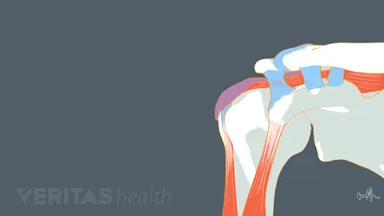
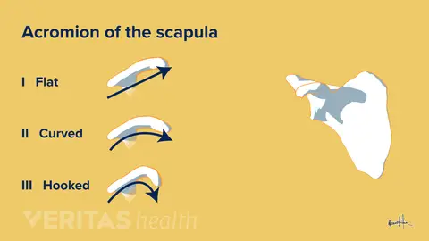
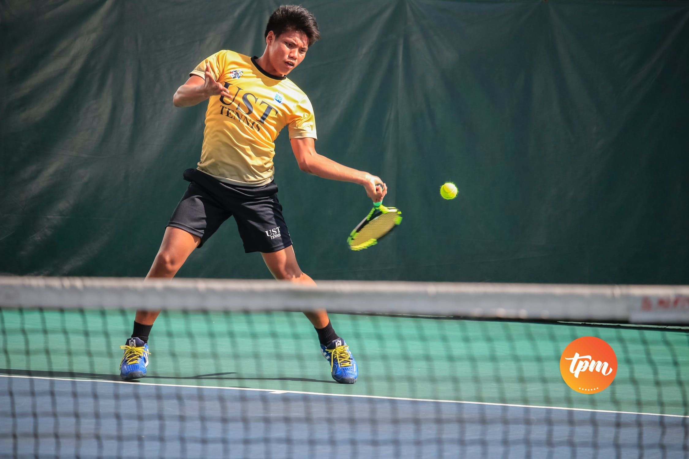
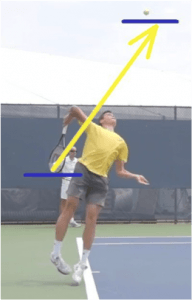
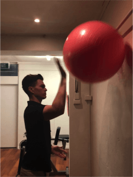

Shoulder Pain¶
By Brian Lee, MD¶
In This Article:¶
• Shoulder Pain: Is it Shoulder Impingement?
• Shoulder Impingement Symptoms
• Causes and Risk Factors of Shoulder Impingement
• Diagnosing Shoulder Impingement
• Nonsurgical Treatments for Shoulder Impingement
• Surgical Treatment Options for Shoulder Impingement
¶
¶
¶
¶
¶
¶
¶
¶
¶
¶
¶
¶
Shoulder Pain: Is it Shoulder Impingement?¶
Shoulder pain is the third most common complaint in orthopedic practice, and shoulder impingement is often the cause. Shoulder impingement can make reaching overhead difficult, cause pain or discomfort when sleeping, and affect range of motion.
What Is Shoulder Impingement?

Shoulder impingement occurs when the arm is raised (abduction). During this motion, the supraspinatus muscle, the bicep muscle tendon, and/or the bursa can become pinched between the bones of the shoulder.
Shoulder impingement---sometimes called subacromial impingement---refers to the painful pinching of the muscles, tendons, or other soft tissues between the bones and/or ligaments of the shoulder.
In the shoulder, soft tissues are sandwiched between bones
The shoulder includes an area where soft tissues, such as the bicep tendon, rotator cuff, ligaments, and bursa, are sandwiched between bones. This area, called the subacromial space, is located above the shoulder's ball-and-socket joint and below the acromion, the top-most bone of the shoulder.
When a person raises his or her arm, the subacromial space becomes smaller. In a case of shoulder impingement, raising the arm causes the pinching of soft tissues, which results in shoulder pain and other symptoms.
The shoulder joint is a ball-and-socket joint supported by soft tissues. Its design allows for a high degree of flexibility but also makes the shoulder susceptible to injuries such as shoulder impingement.
A person may have one or more issues that leads to shoulder impingement, including:
-
Overuse, such as from swimming, baseball, or occupations that require frequent, heavy overhead lifting. Overuse of a joint can irritate and inflame soft tissues, causing them to swell. These swollen tissues are more likely to become pinched in the subacromial space.
-
A narrow subacromial space, caused by either natural (inherited) bone shape or arthritic changes to the bones.
-
Injuries, such as a rotator cuff tear or torn labrum. In some cases, untreated shoulder impingement can actually cause these injuries.
People who have shoulder impingement can benefit from knowing its symptoms, the causes and risk factors, and how it is diagnosed and treated.
Shoulder Impingement Symptoms
The symptoms of shoulder impingement can vary from person-to-person, but tend to arise gradually over days, weeks, and months.
Shoulder Pain and Other Symptoms
People with shoulder impingement often report Pinching pain during certain movements. A pinching sensation at the top of the shoulder may be felt during:
-
Overhead activities, such as reaching for something on an upper shelf in a closet or kitchen
-
Throwing, such as when pitching a baseball or serving a tennis ball
-
Reaching behind the back to zip or button a shirt or dress
-
Sleeping on the stomach, with arms out to the side or above the head
Causes and Risk Factors of Shoulder Impingement
Shoulder impingement is a condition that causes pain and pinching sensation in the shoulder. It can also decrease a person's range of motion. Anyone can get shoulder impingement, but people with certain risk factors are more likely to develop it.
-
Overuse. People who participate in sports that require frequent and repetitive use of the arms and shoulders, such as baseball, swimming, tennis, and football, are at higher risk of developing shoulder impingement. Additionally, those who frequently perform heavy overhead lifting, such as construction workers or movers, also have an increased risk to develop impingement.
-
Curved or hooked acromion. Some people's natural anatomy makes them more likely to develop shoulder impingement. People who have curved or hooked acromion bones typically have a smaller subacromial space than a person who has a flat acromion.^1^

The acromion is the uppermost part of the scapula (shoulder blade). An acromion may be flat, curved, or hooked.
-
Prominent coracoid. The coracoid is a small projection from the shoulder blade. Like people who have hooked or curved acromions, some people have prominent coracoids. These people are more susceptible to another, less common type of shoulder impingement called subcoracoid impingement.
-
Shoulder instability. Shoulder instability refers to when shoulder muscles, tendons, and ligaments no longer secure the shoulder joint causing pain. As a result, the shoulder is prone to partial dislocation, dislocation, and other conditions, such as shoulder impingement.^2^
- Previous shoulder injuries. People who have sustained injuries to the shoulder joint, such as a torn labrum, may be at risk for developing shoulder impingement in the future.
- Bone spurs. Bone spurs are projections that can cause the subacromial space to narrow and become smaller. As a result, there is less room for tendons and other soft tissues, making impingement more likely.
-
Coracoacromial ligament calcification. The coracoacromial ligament connects the acromion to the coracoid (a projection of the shoulder blade located at the front of the body). This ligament runs in a diagonal fashion over the rotator cuff in the subacromial space. Calcifications in this ligament may cause pain and contribute to tissue injury.^3^
-
Poor posture. Posture while reading, sitting at a desk, driving, or cooking, can play a role in the development of shoulder impingement. Hunching or slumping the shoulders can cause the narrowing of the space between the acromion and rotator cuff.
-
Age. Shoulder impingement is most often seen in adults over the age of 50, although it can develop at any age.
Shoulder impingement may be a symptom of more serious problems, such as a rotator cuff tear. In these cases, a person may experience other symptoms, too.
Primary vs. secondary shoulder impingement
A medical professional may describe a person's condition as either "primary" or "secondary" shoulder impingement. Primary impingement refers to causes associated with underlying structural issues and conditions, including a small subacromial space or osteoarthritis. Secondary impingement refers to movement and posture related problems, such as overuse, or an injury, such as a rotator cuff tear. Whether shoulder impingement is diagnosed as primary or secondary may affect the recommended treatment.
Diagnosing Shoulder Impingement
[A pinching sensation in the shoulder when reaching the arm up may indicate impingement.] However, the only way to know for sure is with a diagnosis, which requires a visit to a health care provider.
A health care provider will take the patient's medical history, conduct a physical examination, and order any necessary medical imaging tests.
Patient History
The person should be prepared to provide an accurate description of symptoms, including the nature, duration, and location of the pain. A person will want to inform his or her physician of any trauma (even minor) to the shoulder area.
Physical Examination
During a physical exam, a doctor will check the shoulder's range of motion and look for symptoms, such as tenderness or swelling. Orthopedic tests may be used to trigger the pain a person experiences in day-to-day activities. Examples include:
Neer sign test. During this test:
-
The patient will be in a relaxed, standing position with arms at his or her side.
-
The doctor will move the arm of the affected shoulder through a full range of motion above the head.
-
The test is positive if the patient reports pain in the front or top of the shoulder.
Hawkins-Kennedy Test. During this test:
-
The patient will sit or stand in a relaxed position.
-
The doctor will raise the arm to shoulder height and adduct the arm (towards the body).
-
The doctor will then internally rotate the shoulder by firmly moving the arm in a downward motion.
Pain with this maneuver can be a sign of subacromial or subcoracoid impingement.
After a thorough physical examination, a doctor may be able to rule out certain other potential causes of the shoulder pain, such as a rotator cuff tear or shoulder osteoarthritis. To make a definitive diagnosis, the doctor will order diagnostic testing.
Medical Imaging
Medical imaging that may be ordered to confirm or rule out a shoulder impingement diagnosis include:
X-rays. X-rays do not show soft tissue and cannot be used to definitively diagnose shoulder impingement. However, they may be used to identify bone spurs or other bone abnormalities that can lead to shoulder impingement.
Magnetic resonance imaging (MRI). An MRI will show a detailed view of the soft tissue around the shoulder. MRIs can show inflammation and/or tearing of the rotator cuff and bursa. An MRI of the shoulder can sometimes be preceded by another medical imaging procedure called an arthrogram. During the arthrogram, contrast dye that is visible on MRI images is injected into the joint. The dye can sometimes help tissue damage stand out on MRI results.
Once a diagnosis is made, a doctor will recommend a treatment plan.
Nonsurgical Treatments for Shoulder Impingement
In most cases of shoulder impingement, nonsurgical treatment options will be recommended first. The goals of nonsurgical treatments are to:
-
Reduce inflammation of the affected soft tissues
-
Improve range of motion
-
Improve supporting muscle strength and posture to increase the shoulder's subacromial space
-
Restore joint function1
-
Reduce pain1
Nonsurgical treatment options to relieve pain and improve joint mobility include:
Rest. A person should avoid overhead activities and rapid movement, such as sports that require throwing or swinging. It is best to avoid frequent shoulder movement, however, total immobilization should be avoided. Immobilization can lead to weakness, stiffness, and worsening shoulder problems.
Physical therapy. A licensed physical therapist can provide an individual treatment plan. A physical therapy treatment plan may focus on improving range of motion and strengthening weak muscles. A physical therapist may also recommend at-home stretches and exercises, which can help speed up recovery as well as prevent future shoulder problems.
Nonsteroidal anti-inflammatory drugs (NSAIDs). Some research suggests that 1 to 2 weeks of daily over-the-counter NSAIDs, such as ibuprofen (Advil) or aspirin (Bayer, Ecotrin) may help to reduce pain. Prescription strength NSAIDs may be recommended to maximize anti-inflammatory effects.
Corticosteroid injections. A corticosteroid injection contains a powerful anti-inflammatory drug called cortisone. Cortisone may be injected around the affected tendons to reduce inflammation and swelling that may be causing or contributing to the impingement. It is not recommended to receive more than 2 to 3 rounds of corticosteroid injections because, when administered repeatedly, tendon damage can occur.
Regenerative medicine. A doctor may offer regenerative medicine treatments, such as platelet rich plasma (PRP) and stem cell injections. The goal of this type of treatment is to treat soft tissue problems, such as a rotator cuff tear, that is contributing to the impingement. Regenerative treatments are generally considered safe, but there is very little clinical research regarding whether they are effective in reducing shoulder impingement symptoms. One study of 62 patients suggests that PRP does not work better than physical therapy in treating shoulder impingement.
Generally, nonsurgical treatments will be used for 3 to 4 months before more invasive procedures are considered.
Surgical Treatment Options for Shoulder Impingement
While most cases of shoulder impingement can be treated without surgery, sometimes it is recommended. A doctor may suggest surgery if nonsurgical treatment options do not adequately relieve shoulder pain and improve range of motion.
Surgery can create more room for the soft tissues that are being squeezed. Surgical treatment for shoulder impingement may include:
Subacromial decompression and acromioplasty. During decompression surgery, a surgeon removes bone tissue from the end and underside of the acromion, the topmost bone of the shoulder. This procedure expands the subacromial space, which is located between the acromion and the shoulder's ball-and-socket joint. Expanding this space creates more room for tendons and other soft tissues. People with curved or hooked acromions or significant subacromial bone spurs may be candidates for this procedure.
Bursectomy. This is a procedure that will remove an inflamed bursa and any surrounding scar tissue. After removal, a new bursa may grow in its place.
Rotator cuff repair. A rotator cuff repair may involve reattaching torn tendons to their attachment site on the upper humerus bone.
Subacromial decompression, shoulder bursectomy, and rotator cuff repairs can be performed in two different ways:
Arthroscopic technique. This is a minimally invasive surgery that is performed using small tools inserted into multiple small incisions around the shoulder area. The doctor is able to see into the area with an arthroscope, a device about the size of a pencil that is equipped with a small television camera.
Open technique. This approach requires an incision, usually no more than 3 inches in length, so that the surgeon can directly view the rotator cuff and acromion.
The type of surgery performed will be dependent upon the doctor's preference as well as the severity of the injury and any underlying structural conditions. Arthroscopic surgery is most common.
Recovering from Shoulder Surgery
Recovery and long-term effects from these shoulder surgeries is dependent upon a number of factors, including the type of surgery (open or arthroscopic) and the patient's age.
Generally, a person's arm will be placed in a sling for 1 to 2 weeks to limit mobility so that the shoulder can start to heal. A graduated rehabilitation program is then started depending on the surgical procedure. These typically begin with stretches to recover range of motion and eventually incorporate strengthening exercises.
Most people are able to return to the activities they did before surgery in about 2 to 4 months. In some cases, full recovery can take up to a year.
Dr. Brian Lee is an orthopedic surgeon specializing in the treatment of elbow and shoulder conditions at the Kerlan-Jobe Institute at Cedars Sinai.
Dr. Lee has authored research papers, abstracts, and book chapters in the field of shoulder and elbow surgery. He serves as faculty for the sports medicine fellowship and shoulder/elbow reconstruction fellowship at Kerlan-Jobe and is an orthopedic consultant for the PGA Tour and the LA Sparks.
How to avoid Tennis Injuries | The Physio Movement¶
Posted on: Feb 18th, 2019 by thephysiomovement | Categories: Sports Medicine & Nutrition

How to Avoid a Tennis Shoulder Injury¶
The anatomy of the Rotator Cuff¶
The rotator cuff is a term given to a group of four specific muscles and tendons that act to provide strength and stability of the shoulder joint during multi-directional movement and loading of the shoulder joint. These muscles also act to maintain the head of the upper arm bone (humerus) in the shoulder socket during dynamic shoulder movements.
The rotator cuff muscles include:¶

Supraspinatus¶
Infraspinatus¶
Teres minor¶
Subscapularis¶
Due to the high demands the tennis serve places on the shoulder complex, rotator cuff injuries are among the most common injuries for the competitive tennis player. These injuries frequently occur due overuse of the rotator cuff during the service motion, where the rotator cuff is subjected to high eccentric loads when decelerating the arm following ball impact.
These eccentric contractions of the rotator cuff following ball impact are of vital importance in the shoulder as they assist in maintaining the stability required to both prevent injury and enhance performance. During the tennis serve the upper arm is initially elevated approximately 90-100 degrees relative to the body. From this position, large forces are produced by the internal rotator muscles of the shoulder such as the pectoral muscles and rotator cuff to accelerate the arm and racquet head upwards and forwards toward an explosive ball impact.

Serve preparation phase prior to ball impact
Immediately following ball impact, the posterior rotator cuff muscles have to maximally contract to rapidly decelerate the arm as the arm continues to follow-through, whilst also being responsible for maintaining shoulder joint stability. [Efficient deceleration is vital for preventing rotator cuff injury, as the inability to dissipate these forces can cause overload and overuse of the rotator cuff.]

Deceleration phase following ball impact
Therefore, in order to prevent injury it is essential for the competitive tennis player to maintain sufficient rotator cuff strength, range of motion and dynamic stability of the shoulder joint. [To achieve this, tennis specific strengthening exercises should be undertaken to either reduce injury risk, or rehabilitate following an injury to the rotator cuff.]
Exercises to avoid Tennis Injury¶
Pictured below, Physiotherapist Lachlan demonstrates three specific tennis strengthening progressions to improve the rotator cuffs capacity to decelerate the arm following ball impact for the tennis serve.
Exercise progression 1: Banded external rotation at neutral shoulder elevation

Exercise 1: Banded external rotation at neutral shoulder elevation
Exercise Progression 2: Banded external rotation at 90 degrees shoulder elevation
 ** **
** **
Exercise 2: Banded external rotation at 90 degrees shoulder elevation
Exercise Progression 3: Swiss Ball wall bounces at 90 degrees abduction

Exercise 3: Swiss Ball wall bounces at 90 degrees abduction
Whilst these exercises pictured above are great for improving the strength of the rotator cuff muscles in preparation for tennis serve, it is essential that if you are experiencing shoulder pain that you seek advice from our Sports focused Physiotherapists at The Physio Movement for a comprehensive assessment and treatment plan to allow you to return to tennis pain free.
For any further questions relating to this article, Lachlan can be contacted at The Physio Movement** **
** **